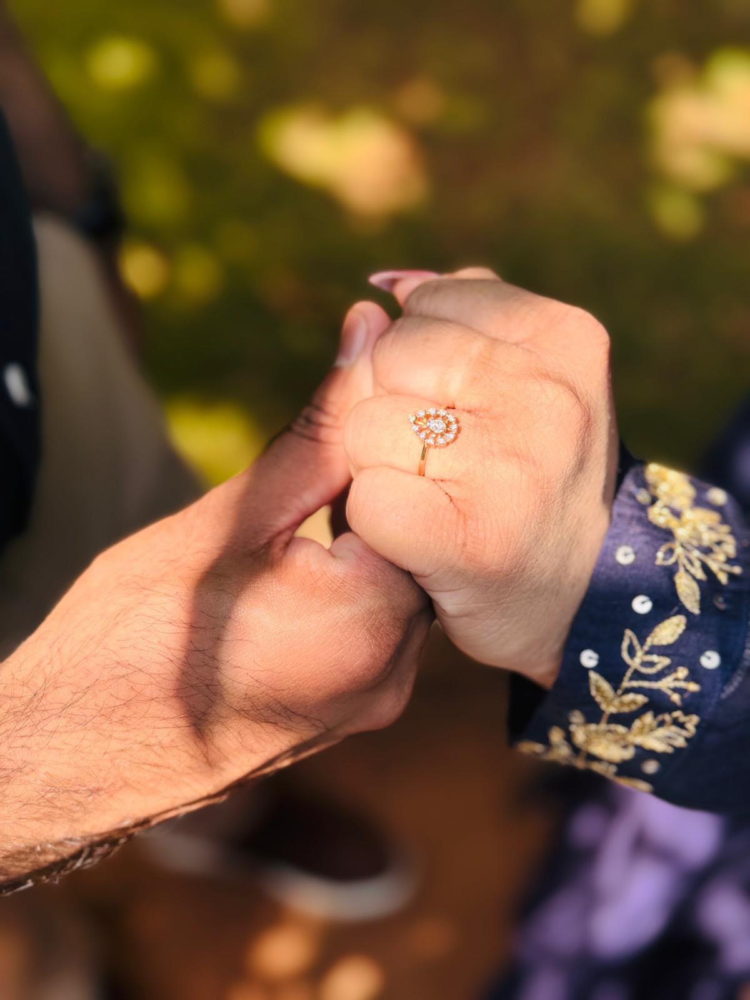

“Therefore what God has joined together, let no one separate”
— Mark 10:9
Jisson & Catherine
28th December 2026 · Monday
are solemnising their Betrothal, and we request your presence & blessings
Scroll
Counting Down
Until Our Betrothal Ceremony
00
Days
00
Hours
00
Minutes
00
Seconds
With Joyful Hearts
Together with our beloved parents and families, we cordially invite your esteemed presence and blessings on the auspicious occasion of the Betrothal ceremony of our children.
The Groom
Jisson Alex
Son of Mrs. Sini Alex & Mr. Alex Sebastian
Chennithala House,
Changanacherry
Chennithala House,
Changanacherry
&
The Bride
Catherine Therese Thomas
Daughter of Mrs. Jincy Thomas & Mr. Thomas Philip
Ambalathinkal House,
Changanacherry
Ambalathinkal House,
Changanacherry
Your prayers and gracious presence on this beautiful day will make our Betrothal celebration truly complete.
The Celebrations
Events
Sacred Ceremony
Betrothal Ceremony
28th December 2026 — Monday
12:00 PM
St Mary’s Metropolitan Church
Changanacherry, Kerala
Join Us After
Reception & Lunch
28th December 2026 · Monday
Immediately following Ceremony
Parish Hall
Changanacherry, Kerala
Where To Find Us
Venues & Directions
✦ Betrothal Church Venue ✦
St Mary’s Metropolitan Church
Changanacherry, Kerala, India
Open in Google Maps
✦ Reception Venue ✦
Parish Hall
Changanacherry, Kerala, India

Jisson & Catherine
With Love & Prayers,
we look forward to celebrating our Betrothal with you.
Jisson & Catherine · 28th Dec Monday